Risk graphs — Friday, November 13, 2026
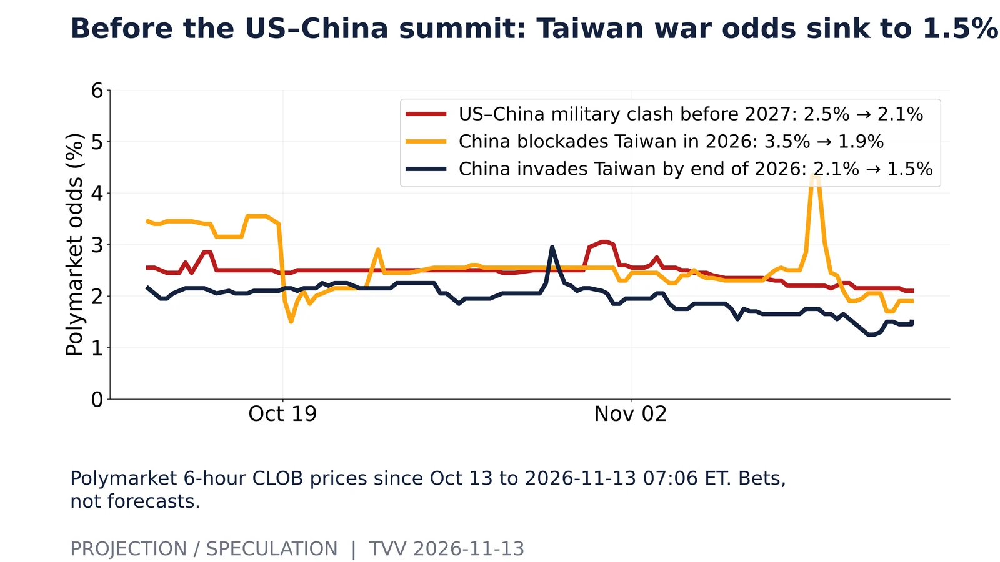
Before the US–China summit: Taiwan war odds sink to 1.5%. Polymarket 6-hour CLOB prices since Oct 13 to 2026-11-13 07:06 ET. Bets, not forecasts.Source: https://polymarket.com/event/will-china-invade-taiwan-before-2027 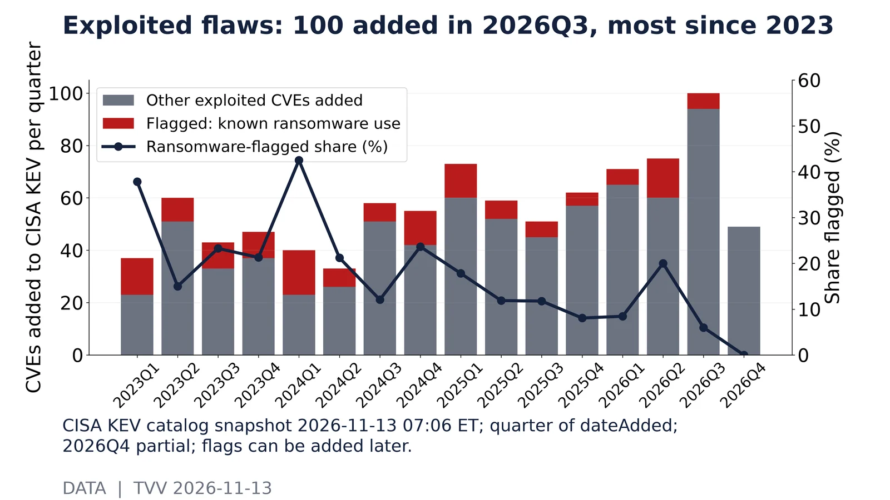
Exploited flaws: 100 added in 2026Q3, most since 2023. CISA KEV catalog snapshot 2026-11-13 07:06 ET; quarter of dateAdded; 2026Q4 partial; flags can be added later.Source: https://www.cisa.gov/known-exploited-vulnerabilities-catalog 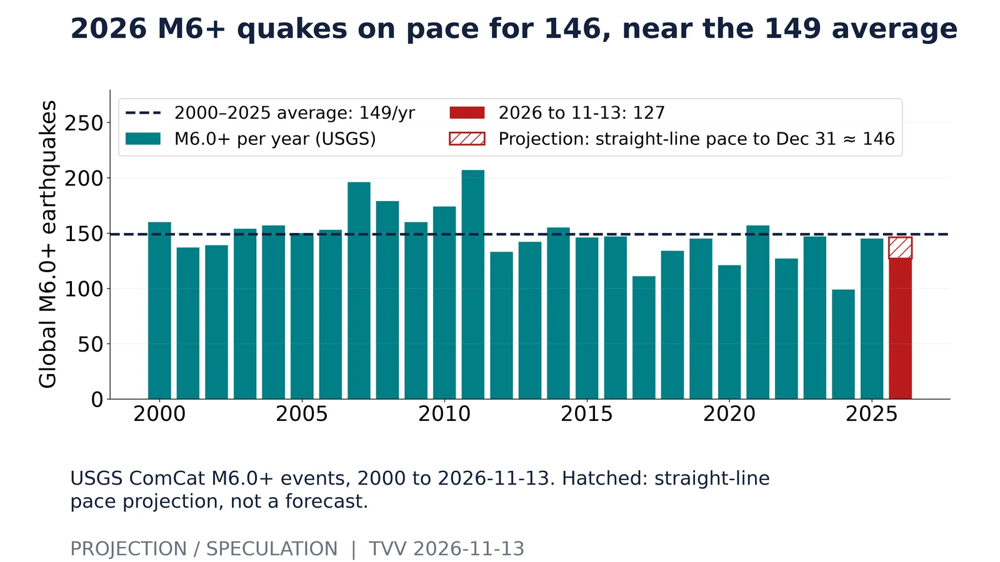
2026 M6+ quakes on pace for 146, near the 149 average. USGS ComCat M6.0+ events, 2000 to 2026-11-13. Hatched: straight-line pace projection, not a forecast.Source: https://earthquake.usgs.gov/fdsnws/event/1/query?format=csv&starttime=2000-01-01&endtime=2026-11-13T12:00:00&minmagnitude=6 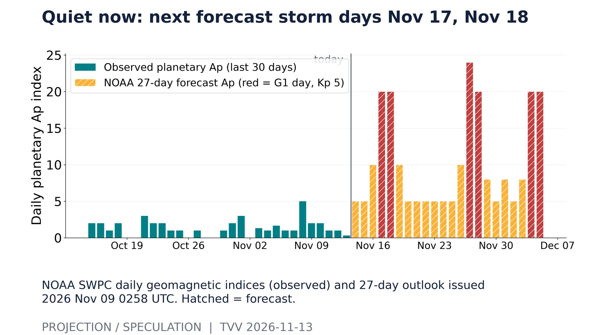
Quiet now: next forecast storm days Nov 17, Nov 18. NOAA SWPC daily geomagnetic indices (observed) and 27-day outlook issued 2026 Nov 09 0258 UTC. Hatched = forecast.Source: https://services.swpc.noaa.gov/text/daily-geomagnetic-indices.txt 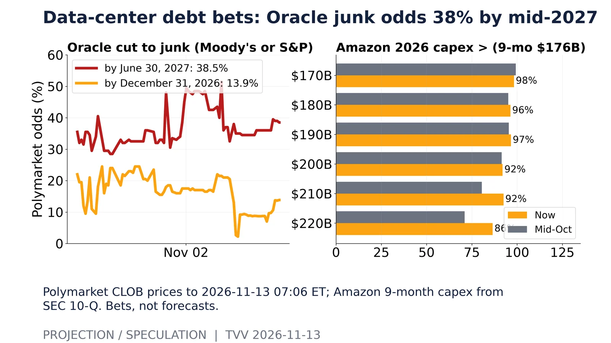
Data-center debt bets: Oracle junk odds 38% by mid-2027. Polymarket CLOB prices to 2026-11-13 07:06 ET; Amazon 9-month capex from SEC 10-Q. Bets, not forecasts.Source: https://polymarket.com/event/oracle-downgraded-to-junk-by-moodys-or-sp-by 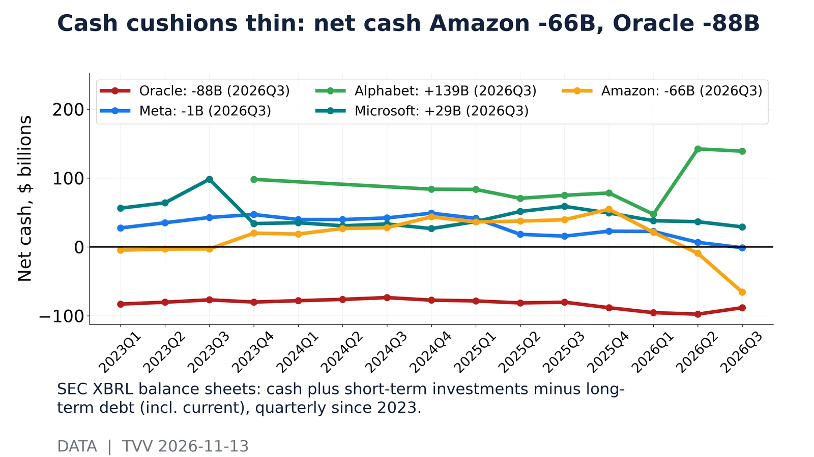
Cash cushions thin: net cash Amazon -66B, Oracle -88B. SEC XBRL balance sheets: cash plus short-term investments minus long-term debt (incl. current), quarterly since 2023.Source: https://data.sec.gov/api/xbrl/companyfacts/CIK0001341439.json 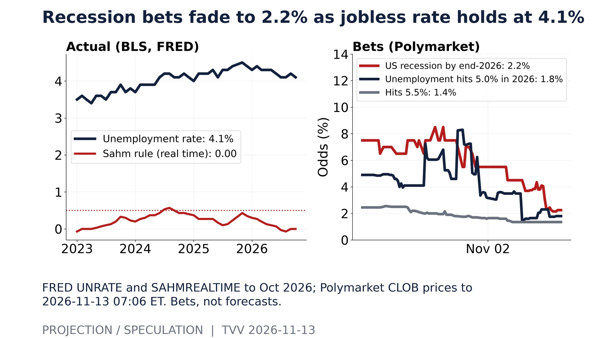
Recession bets fade to 2.2% as jobless rate holds at 4.1%. FRED UNRATE and SAHMREALTIME to Oct 2026; Polymarket CLOB prices to 2026-11-13 07:06 ET. Bets, not forecasts.Source: https://polymarket.com/event/us-recession-by-end-of-2026 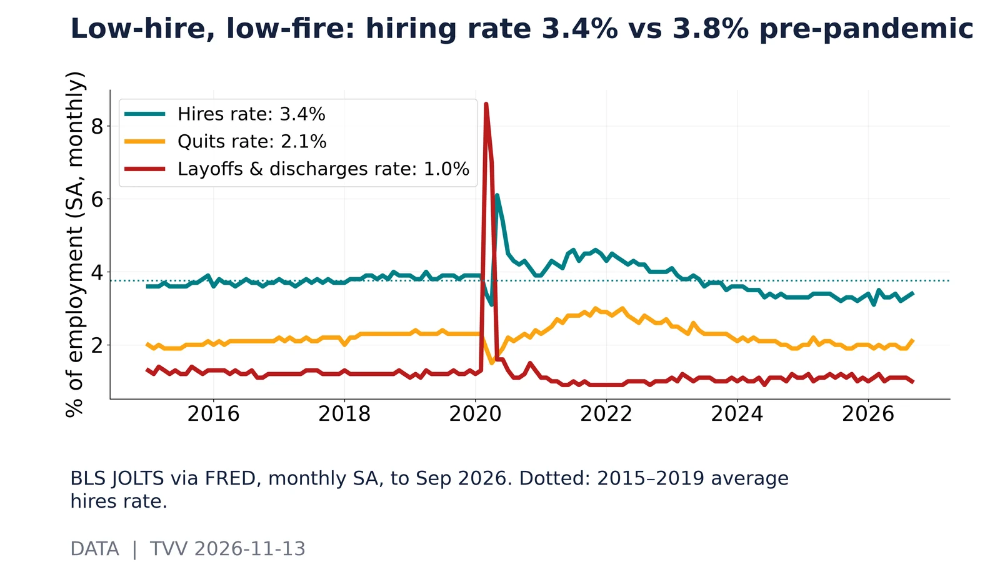
Low-hire, low-fire: hiring rate 3.4% vs 3.8% pre-pandemic. BLS JOLTS via FRED, monthly SA, to Sep 2026. Dotted: 2015–2019 average hires rate.Source: https://fred.stlouisfed.org/graph/fredgraph.csv?id=JTSHIR 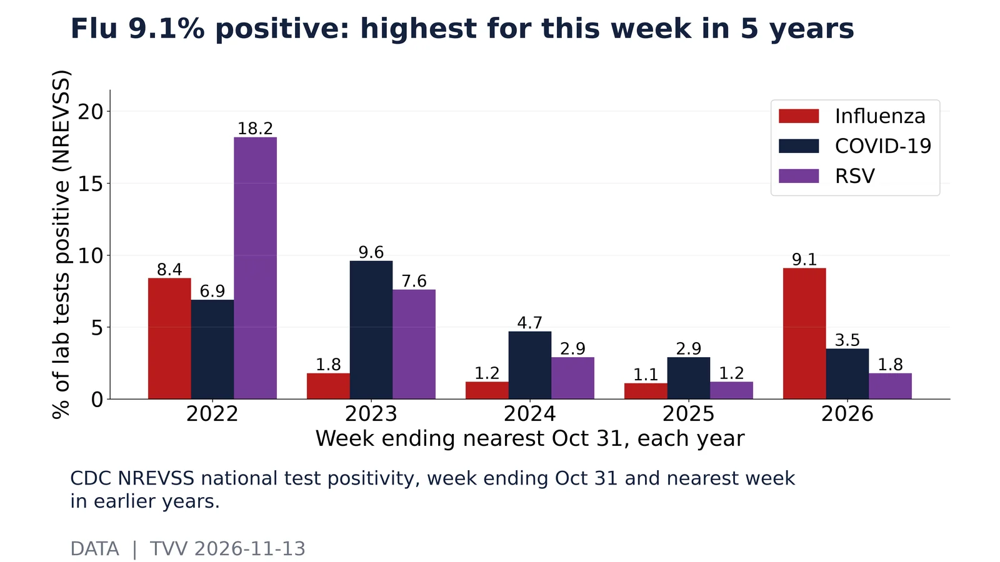
Flu 9.1% positive: highest for this week in 5 years. CDC NREVSS national test positivity, week ending Oct 31 and nearest week in earlier years.Source: https://data.cdc.gov/Laboratory-Surveillance/Percent-of-Tests-Positive-for-Viral-Respiratory-Pa/seuz-s2cv 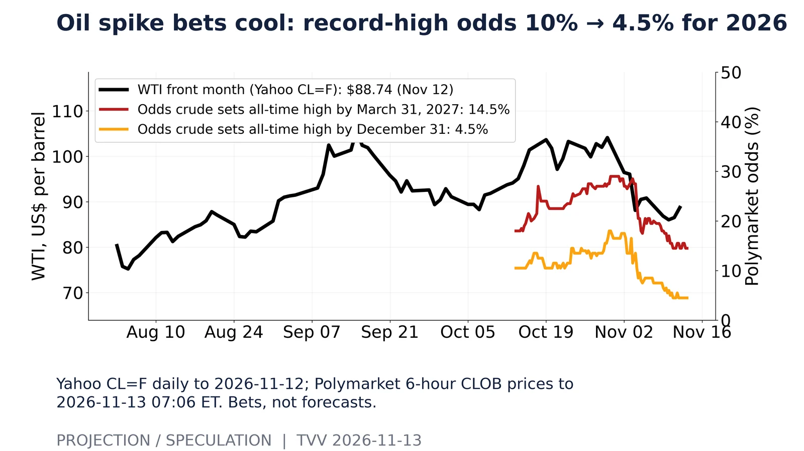
Oil spike bets cool: record-high odds 10% → 4.5% for 2026. Yahoo CL=F daily to 2026-11-12; Polymarket 6-hour CLOB prices to 2026-11-13 07:06 ET. Bets, not forecasts.Source: https://polymarket.com/event/crude-oil-all-time-high-by 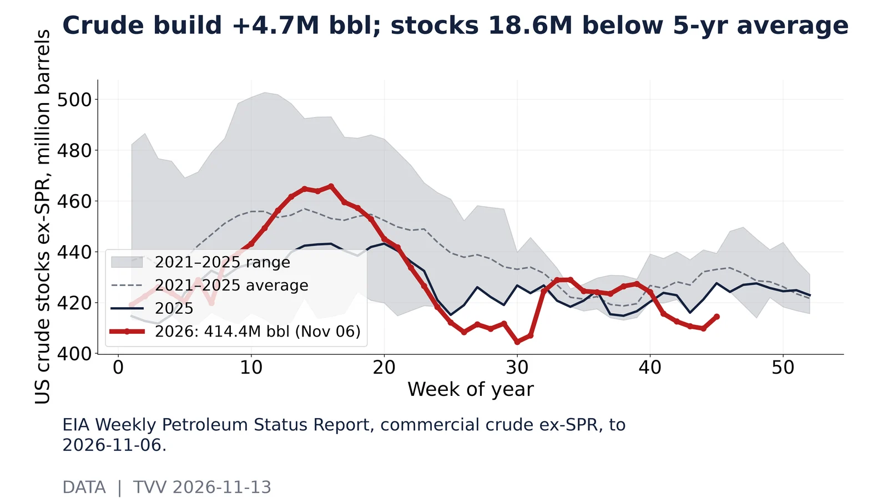
Crude build +4.7M bbl; stocks 18.6M below 5-yr average. EIA Weekly Petroleum Status Report, commercial crude ex-SPR, to 2026-11-06.Source: https://www.eia.gov/dnav/pet/hist/LeafHandler.ashx?n=PET&s=WCESTUS1&f=W 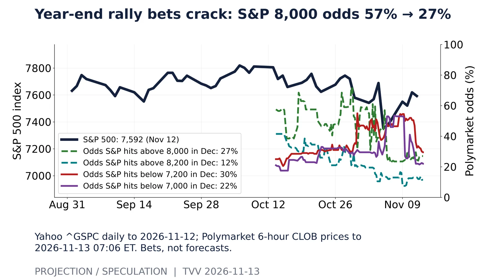
Year-end rally bets crack: S&P 8,000 odds 57% → 27%. Yahoo ^GSPC daily to 2026-11-12; Polymarket 6-hour CLOB prices to 2026-11-13 07:06 ET. Bets, not forecasts.Source: https://polymarket.com/event/spx-hit-dec-2026 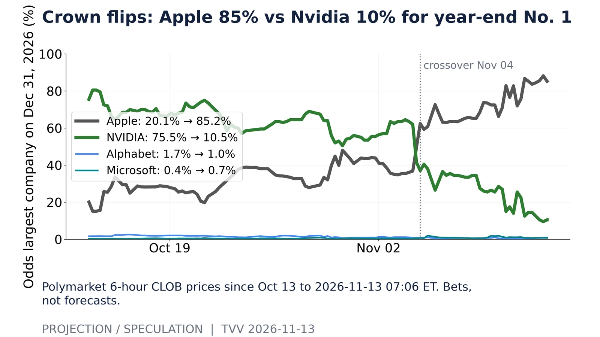
Crown flips: Apple 85% vs Nvidia 10% for year-end No. 1. Polymarket 6-hour CLOB prices since Oct 13 to 2026-11-13 07:06 ET. Bets, not forecasts.Source: https://polymarket.com/event/largest-company-end-of-december-2026 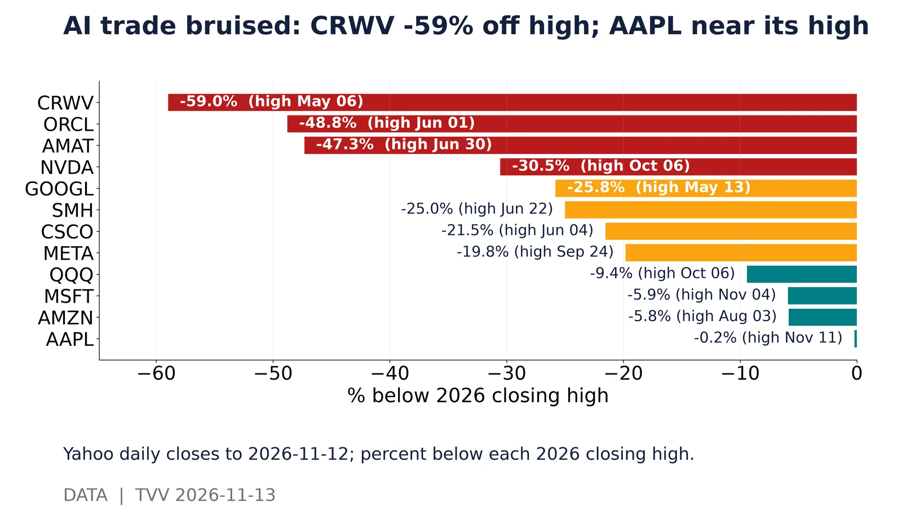
AI trade bruised: CRWV -59% off high; AAPL near its high. Yahoo daily closes to 2026-11-12; percent below each 2026 closing high.Source: https://query1.finance.yahoo.com/v8/finance/chart/NVDA?range=2y&interval=1d 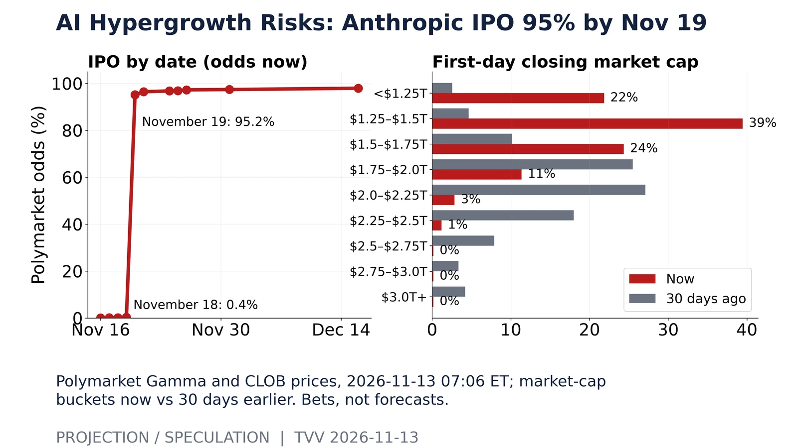
AI Hypergrowth Risks: Anthropic IPO 95% by Nov 19. Polymarket Gamma and CLOB prices, 2026-11-13 07:06 ET; market-cap buckets now vs 30 days earlier. Bets, not forecasts.Source: https://polymarket.com/event/anthropic-ipo-by 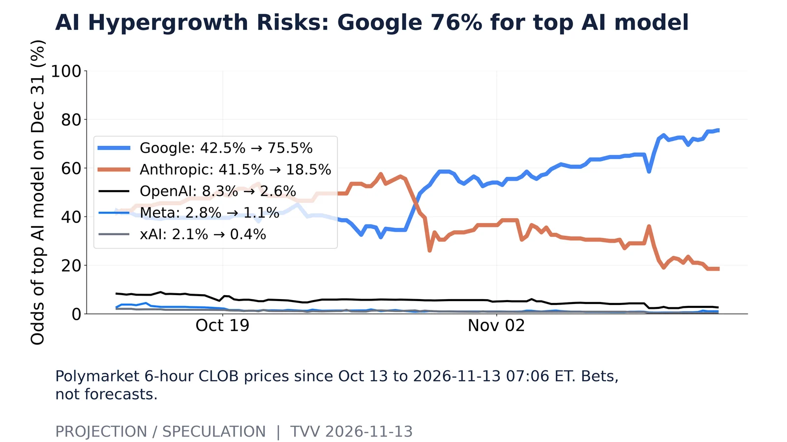
AI Hypergrowth Risks: Google 76% for top AI model. Polymarket 6-hour CLOB prices since Oct 13 to 2026-11-13 07:06 ET. Bets, not forecasts.Source: https://polymarket.com/event/which-company-has-best-ai-model-end-of-2026